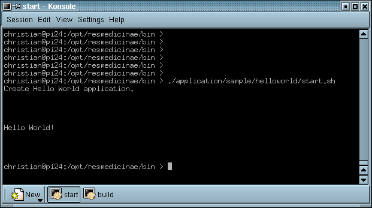

4 Say Method
Since the launcher's only functionality is to run the component, it shouldn't contain the methods to display the "Hello World!" message.
The latter is clearly a task of our module controller.
That's why we now create a new public method sayHelloWorld in HelloWorldControllerImpl.java
to print out the message on console. The same commands are deleted in the launcher.
All that the HelloWorldLauncher.java has to do now is to create an instance of HelloWorldControllerImpl
and invoke the sayHelloWorld method on that instance.
HelloWorldControllerImpl c = new HelloWorldControllerImpl();
if (c != null) {
c.sayHelloWorld();
} else {
throw new NullPointerException("Could not say 'Hello World!'. The Hello World application is null.");
}
As a rule of Component Oriented Programming, you should always use the standard constructor to create a new instance and avoid handing over parameters to it. Any parameters will be forwarded later, using special "Lifecycle" methods.
As always, when some method is called on some instance in the form instance.method(),
we need to check that instance for null and throw a NullPointerException if the instance is null.
Our sample screenshot still hasn't changed:

| Next | Contents | Next |
Copyright (c) 1999-2002. The Res Medicinae Webmasters. All rights reserved. GNU FDL license. Last Update: 07.05.2002